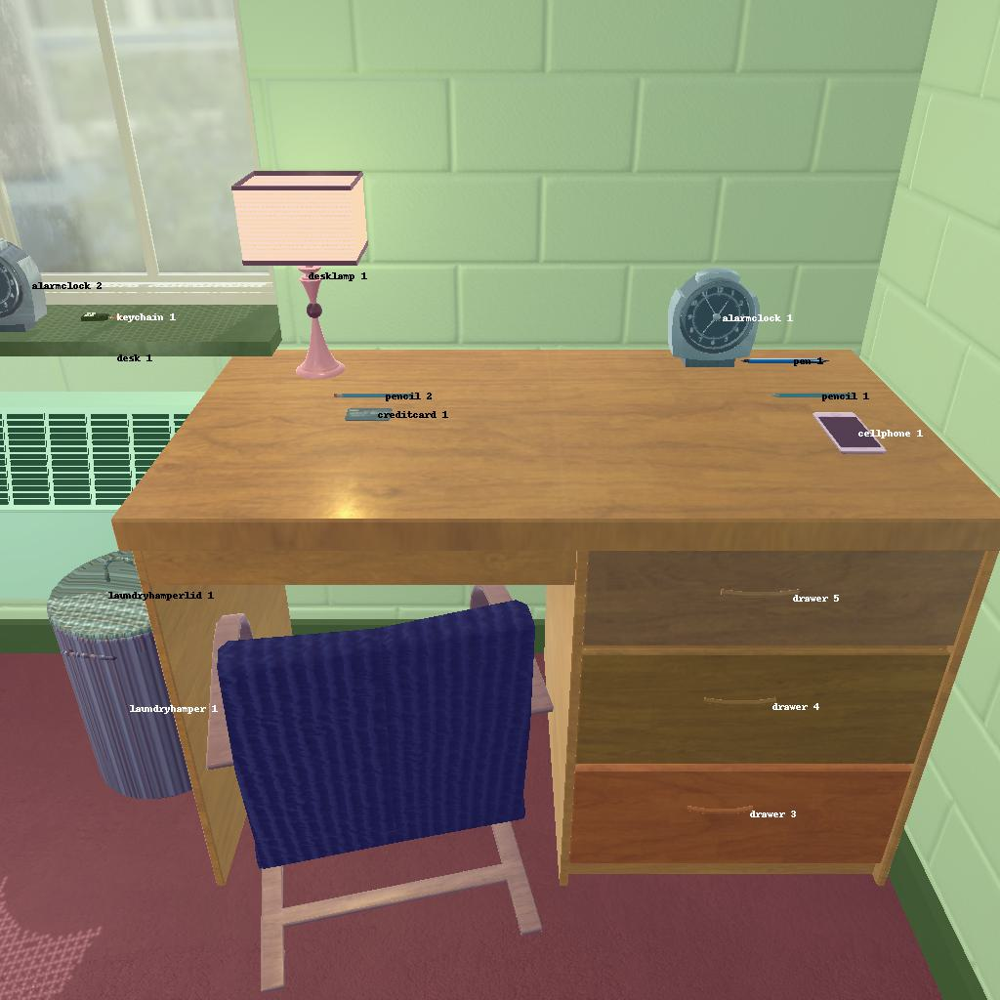

---------------------------------------------------------task: 8---------------------------------------------------------
--------------------------------------------------------------------------------------------------------------------------------------------------------------------
--------------------------------------------------------------------------------------------------------------------------------------------------------------------
Step:--------------------------------------------------------------------------4-------------------------------------------------------------------------------
----------------------------------------
VLM Prompt:
Image1:
Image2:
**Instruction**
1. Analyze the provided image to identify all visible household objects, focusing on those relevant to the task description "put some laptop on desk."
2. Use the analysis of the image and the task hint "The agent must find an object of the desired type, pick it up, find the correct location to place it, and put it down there." to answer the question: what is the most reasonable action in the choices for the task description "put some laptop on desk"?
4. Decide and write the answer using the template: The answer is: (i): , where i is the real number. If there is no desired object in the image, search every place based on **Initial Observation** to find the object. And if no one is exactly correct, choose a similar answer.
**Initial Observation**
You are in the middle of a room. Looking quickly around you, you can see bed (1), garbagecan (1), desk (1), sidetable (1), drawer (1-5), laundryhamper (1)
**Answer Choices**
(1): go to bed 1
(2): go to garbagecan 1
(3): go to desk 1
(4): go to sidetable 1
(5): go to drawer 2
(6): go to laundryhamper 1
(7): go to drawer 5
(8): open drawer 4
(9): close drawer 4
(10): examine drawer 4
**Answer**
Let's think step by step by following the instructions.
----------------------------------------
----------------------------------------
Original Response:
First, we analyze the image for any visible household objects relevant to the task "put some laptop on desk." In the image, we can see a desk, a lamp, an alarm clock, pencils, a chair, and drawers. There is no laptop visible on the desk or in the immediate surroundings.
Second, we consider the task hint, which suggests that the agent must find the object (a laptop), pick it up, find the correct location (the desk), and put it down there.
Based on the initial observation, we know there is a desk (1), drawers (1-5), and other objects in the room. Since the desk is already in the image and there is no laptop on it, the next reasonable action would be to look for the laptop in the drawers, as it is a common place to store such an item.
Therefore, the most reasonable action from the given choices would be to search the drawers.
The answer is: (8): open drawer 4.
----------------------------------------
----------------------------------------
>>> Refine Original VLM Response and Get Pure Action: open drawer 4
----------------------------------------
-----------------------------------------------------------------
Running time: 10.281693458557129 seconds
Total Money: 3.316899999999998
-----------------------------------------------------------------
-----------------------------------------------------------------
Text Observation:You open the drawer 4. The drawer 4 is open. In it, you see a desklamp 1, a alarmclock 1, a laundryhamperlid 1, a alarmclock 2, a cellphone 1, a creditcard 1, a pen 1, a pencil 1, a pencil 2, and a keychain 1.
-----------------------------------------------------------------
UNSUCCEED